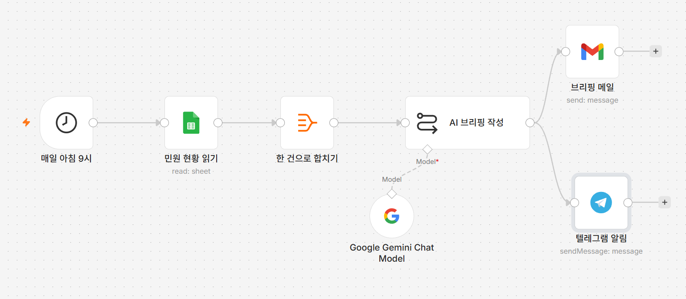
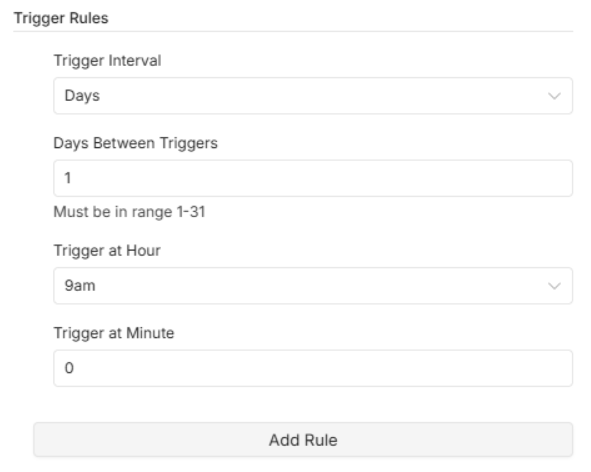
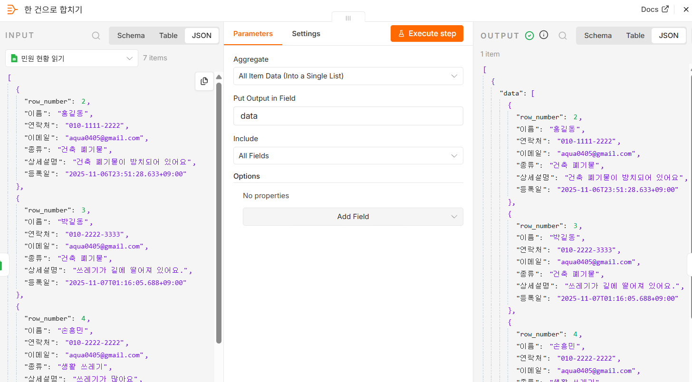
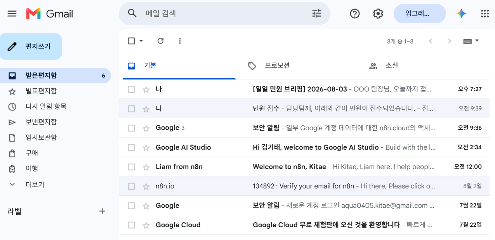

P2 매일 아침 민원 브리핑 봇
정해진 시각에 스스로 실행됩니다
왜 이게 필요한가
1일차에 만든 자동화 덕분에 민원은 시트에 차곡차곡 쌓입니다. 그런데 쌓이기만 합니다. 아침마다 시트를 열어 스크롤을 내리며 어제 몇 건이 들어왔는지 세고, 종류별로 눈대중하고, 급해 보이는 건이 있는지 훑어봅니다. 팀장님이 "어제 민원 어땠어요?" 하고 물으면 그때 또 한 번 봅니다.
이건 사람이 아니라 컴퓨터가 해야 하는 일입니다. 세는 것도, 분류하는 것도, 요약하는 것도 전부 기계가 훨씬 잘합니다. 사람이 할 일은 요약을 읽고 오늘 무엇을 먼저 할지 정하는 것뿐입니다.
이번에 만드는 봇은 매일 아침 9시에 아무도 시키지 않아도 혼자 시트를 열어보고, 전체 건수와 종류별 건수를 세고, 시급해 보이는 건을 짚어 메일과 텔레그램으로 보내줍니다. 출근해서 자리에 앉으면 이미 도착해 있습니다.
① 정해진 시각에 혼자 실행되기 — 지금까지는 버튼을 누르거나 폼을 제출해야 워크플로우가 돌았습니다. 이번에는 아무도 건드리지 않아도 시각이 되면 스스로 돕니다.
② 여러 건을 한 번에 다루기 — 지금까지는 민원 한 건을 처리했습니다. 이번에는 시트에 쌓인 수십 건 전부를 한꺼번에 넘겨 요약시킵니다. 여기에 함정이 하나 있어서, 아래 따라하기에서 자세히 다룹니다.
이번 시간에 만들 것
매일 아침 9시가 되면 스스로 실행되어 1일차에 만든 구글 시트의 민원 기록을 전부 읽고, AI가 일일 브리핑을 작성해 메일과 텔레그램 두 곳에 동시에 보내는 워크플로우를 만듭니다.
AI 브리핑 작성에서 두 갈래로 갈라집니다
앞의 네 노드는 일직선이고 마지막에만 두 갈래로 갈라집니다.
브리핑 글 하나를 메일과 텔레그램 양쪽에 똑같이 보내는 것이므로, 두 노드
모두 AI 브리핑 작성에서 각각 직접 선을 받습니다.
그림에서 브리핑 메일과
텔레그램 알림으로 가는 선 두 개가 같은 점에서 갈라져
나오는 것을 확인하세요.
노드 이름 아래 회색 글씨(read: sheet,
send: message)는 그 노드가 어떤 동작으로 설정되어
있는지 n8n이 알려주는 것입니다. 다 만든 뒤 이 글씨만 보고도 설정을 잘못하지
않았는지 훑어볼 수 있습니다.
따라하기
- 새 워크플로우 만들기
새 워크플로우를 만들고 이름을
P2 매일 아침 민원 브리핑 봇으로 바꿉니다. - 시각 트리거 추가하기
빈 캔버스 가운데
+를 눌러Schedule Trigger를 고릅니다.노드가 열리면
Trigger Rules아래에 칸 네 개가 있습니다. 아래처럼 맞춥니다.
실제로 손대는 칸은Trigger Interval→Days(기본값 그대로)
Days Between Triggers→1(기본값 그대로 — 하루에 한 번)
Trigger at Hour→9am으로 바꿉니다
Trigger at Minute→0(기본값 그대로)Trigger at Hour하나뿐입니다. 맨 아래Add Rule은 "하루에 두 번" 처럼 시각을 더 넣고 싶을 때 쓰는 버튼이니 지금은 누르지 않습니다.이 노드가 하는 일 지금까지 쓴 트리거는 사람이 눌러야(수동 실행) 또는 사람이 제출해야(폼) 움직였습니다. 이 트리거는 시계만 보고 움직입니다. 매일 오전 9시 정각이 되면 워크플로우가 저절로 시작됩니다.[그림 P2-2] 매일 오전 9시 정각으로 맞춘Trigger Rules
- 구글 시트 읽어오기
트리거 오른쪽
+를 누르고Google Sheets를 고릅니다. 동작 목록에서Get Row(s) in Sheet(행 가져오기)와 비슷한 문구를 고릅니다. 1일차 03강에서는Append(추가)를 골랐습니다. 이번에는 쓰는 게 아니라 읽는 것이므로 다른 동작입니다.자격증명은 1일차에 만들어둔 구글 시트 자격증명을 목록에서 고르면 됩니다. 그다음
Document에서 1일차에 쓰던 민원 시트를 고르고,Sheet에서시트1을 고릅니다. - 여러 줄을 한 덩어리로 합치기
Google Sheets오른쪽+를 누르고Aggregate를 고릅니다.노드가 열리면
Aggregate칸을All Item Data (Into a Single List)로 바꿉니다. 그러면 아래에Put Output in Field와Include두 칸이 나타나는데, 각각 기본값data·All Fields그대로 둡니다.Include가All Fields라는 것은 "시트에서 읽어온 칸을 하나도 빼지 말고 다 넘겨라"는 뜻입니다. AI가 종류·상세설명·등록일을 모두 봐야 브리핑을 쓸 수 있으므로 그대로 두어야 합니다.이 노드를 빼면 브리핑 메일이 수십 통 날아옵니다n8n에서 구글 시트 읽기는 한 줄을 한 건씩 따로 내보냅니다. 민원이 20건 쌓여 있으면 20건이 각각 따로 흘러갑니다. 그대로 AI 노드에 넣으면 AI가 20번 실행되고, 메일도 20통, 텔레그램도 20개가 갑니다. 게다가 각각은 민원 한 건만 보고 쓴 글이라 "전체 몇 건"도 알 수 없습니다.
이 노드가 흩어진 20건을 하나로 묶어 뒤에는 한 덩어리만 흘러가게 만듭니다. 그래야 AI가 한 번만 실행되고, 전체를 보고 쓸 수 있습니다.
[그림 P2-3] 합치기 전과 후 — 왼쪽 INPUT은7 items, 오른쪽 OUTPUT은1 item
이 노드를 실행해보면 화면 왼쪽 위와 오른쪽 위의 숫자가 달라진 것이 보입니다. 왼쪽은 시트에서 읽어온 민원이 일곱 건 (
7 items), 오른쪽은 그 일곱 건이 통째로 들어간 한 건 (1 item)입니다. 오른쪽 내용을 보면"data": [아래에 민원들이 줄줄이 들어가 있습니다 — 이data가 다음 단계 프롬프트에서 부를 이름입니다. - AI 브리핑 노드 추가하기
Aggregate오른쪽+를 누르고Basic LLM Chain을 고릅니다.Source for Prompt를Define below로 바꾸고 아래를 붙여넣습니다.당신은 시청의 업무 비서입니다. 아래는 오늘까지 접수된 민원 목록입니다. 담당 공무원이 아침에 한눈에 볼 수 있도록 간단한 '일일 민원 브리핑'을 작성해 주세요. [규칙] - 전체 건수를 먼저 알려줍니다. - 종류별 건수를 정리합니다. - 특히 시급해 보이는 민원 1~2건을 짚어줍니다. - 5~8줄로 간결하게 작성합니다. [민원 목록] {{ JSON.stringify($json.data) }}맨 아래{{ JSON.stringify($json.data) }}가 앞 단계에서 하나로 묶은 민원 전체입니다.data는 합치기 노드의Put Output in Field에 적혀 있던 그 이름이고,JSON.stringify는 묶음을 AI가 읽을 수 있는 글자로 펴주는 역할을 합니다. - Gemini 모델 붙이고 모델 이름 고르기
AI 브리핑 작성노드 아래쪽에 붙어 있는 작은+(모델을 꽂는 자리)를 눌러Google Gemini Chat Model을 고릅니다. 1일차 06강과 같은 자리, 같은 노드입니다.자격증명은 06강에서 만들어둔 것을 목록에서 고르고, 모델 목록을 열어
models/gemini-2.5-flash를 직접 고릅니다.모델은 매번 직접 골라야 합니다 노드를 추가하면 이름이 미리 채워져 있지만 그대로 두면 안 됩니다.preview가 들어간 모델은 구글이 예고 없이 없앨 수 있어서 어느 날 갑자기 작동하지 않습니다. - 브리핑 메일 보내기
AI 브리핑 작성오른쪽+를 누르고Gmail을 고릅니다. 1일차 04강에서 만든 자격증명을 고른 뒤 아래처럼 채웁니다.To→ 본인 이메일 주소(글자 그대로 입력)
Subject→ 표현식 모드로 바꾸고[일일 민원 브리핑] {{ $now.toFormat('yyyy-MM-dd') }}
Email Type→Text
Message→ 표현식 모드로 바꾸고{{ $json.text }}$now.toFormat은 1일차 03·04강에서 쓴 것과 같습니다. 제목에 날짜가 들어가면 메일함에서 날짜별로 찾기 쉽습니다. - 텔레그램에도 같이 보내기
이번에는
Gmail뒤가 아니라AI 브리핑 작성노드 오른쪽+를 다시 눌러Telegram을 고릅니다.메일 노드 뒤에 붙이면 안 됩니다 1일차 04강에서 배운 것과 같은 이유입니다.Gmail노드를 지나면 흘러가는 값이 "메일을 보냈다"는 발송 결과로 바뀌어, 브리핑 글 자체가 사라집니다. 그러면 텔레그램에는 빈 메시지가 갑니다. 두 노드 모두AI 브리핑 작성에서 각각 직접 선을 받아야 합니다.자격증명은 P1에서 만든 텔레그램 자격증명을 고릅니다.
Chat ID에 본인 chat id 숫자를 넣고,Text는 표현식 모드로 바꿔 아래를 붙여넣습니다.📋 일일 민원 브리핑 {{ $json.text }} - 노드 이름 정리하기
노드 제목을 각각 더블클릭해 아래 이름으로 바꿉니다.
매일 아침 9시·민원 현황 읽기·한 건으로 합치기·AI 브리핑 작성·브리핑 메일·텔레그램 알림
실행하고 확인하기
내일 아침 9시까지 기다릴 필요는 없습니다. 아래쪽
Execute workflow를 누르면 시각과 상관없이 지금 한 번
실행됩니다.
메일함에 [일일 민원 브리핑]으로 시작하고 오늘 날짜가
붙은 메일이 한 통 도착하고, 텔레그램에도 같은 내용이 하나 오면
성공입니다. 본문에 전체 건수와 종류별 건수가 들어 있는지 확인하세요.
[일일 민원 브리핑] 메일
받은편지함 목록에서 제목 뒤에 오늘 날짜가 붙어 있고, 그 뒤로 본문 첫 줄이 미리보기로 이어집니다. 같은 제목이 여러 줄 쌓여 있다면 합치기 노드가 빠진 것이니 아래 안 될 때를 보세요.
확인이 끝났으면 오른쪽 위 활성화 스위치(Active)를
켜둡니다. 이 스위치를 켜야 내일 아침 9시에 저절로 실행됩니다. 꺼두면
시각이 되어도 아무 일도 일어나지 않습니다.
안 될 때
브리핑이 여러 통 날아옵니다 —
한 건으로 합치기 노드가 빠졌거나 엉뚱한 자리에 붙어
있습니다. 순서가 민원 현황 읽기 →
한 건으로 합치기 →
AI 브리핑 작성인지 확인하세요. 합치기 노드를 열어
Aggregate가 All Item Data로
되어 있는지도 확인합니다.
브리핑에 "민원이 없습니다"라고 나옵니다 — 읽어온 시트가 비어 있습니다.
민원 현황 읽기 노드를 실행해 오른쪽 OUTPUT에 줄이
나오는지 보세요. 비어 있다면 Document와
Sheet가 1일차에 쓰던 그 시트·그 탭이 맞는지
확인하세요.
프롬프트에 [object Object]가 들어갑니다 —
JSON.stringify를 빠뜨리고
{{ $json.data }}만 적었습니다. 묶음은 그대로 글자로
바꿀 수 없어서 이런 표시가 나옵니다.
텔레그램 메시지가 비어서 옵니다 —
텔레그램 알림 노드가
브리핑 메일 뒤에 붙어 있습니다. 그 선을 지우고
AI 브리핑 작성에서 새로 이어 붙이세요.
9시가 지났는데 아무것도 안 왔습니다 — 먼저 활성화
스위치(Active)가 켜져 있는지 확인하세요. 켜져 있는데도
안 온다면 n8n 서버의 시간대가 한국 시간이 아닐 수 있습니다. 워크플로우 설정
화면의 시간대(Timezone) 항목이
Asia/Seoul로 되어 있는지 확인하세요.
이번 프로젝트 워크플로우 받기
따라오다 막혔다면 이 파일을 받아 n8n에서 불러오면 이어서 진행할 수 있습니다.
민원 현황 읽기 ·
Google Gemini Chat Model ·
브리핑 메일 ·
텔레그램 알림 네 노드를 각각 열어 자격증명을 다시 골라야
합니다. 그리고 아래 세 자리표시자를 본인 값으로 바꿔야 합니다.
민원 현황 읽기의 Document →
여기에_본인_시트_ID
브리핑 메일의 To →
본인이메일@example.com
텔레그램 알림의 Chat ID →
여기에_본인_chat_id
시트1로 들어 있으니 본인 시트의 탭 이름이
다르면 목록에서 다시 골라야 합니다. 자격증명과 자리표시자를 고치기 전에는
불러온 워크플로우에 빨간 오류 표시가 납니다 — 고장난 것이 아니라 원래 그렇습니다.